很高兴你点击进来，基岩版机械电路圈经常出现一些电路延时的问题，往往是缺乏理论和解释不清，此专栏旨在解决电路延时上的一些较为常出现的问题，同时造福生存电路，飞行器等其他学科。
值得注意的是，这个理论是经验结论，仅代表贴合大部分实验结果的总结，不一定代表源码的事实，仅为各位提供一个比较接近事实的计算方式，不代表客观结果，希望能对各位有些微帮助。
所以我的理论是偏向于应用实战的，如果你只喜欢源码的刨析，建议看这些专栏：
cv7581645
cv7876046
cv10907045
除此之外还一个也是接近代码的经验结论：
cv12980256
因为be几乎所有元件的宏观延时都会强制对其到rt精度，所以在应用角度分析电路时序用rt精度就完全足够了，同时也好理解。值得注意的是，如果你硬要用gt精度来思考的话，根据现在的源码理论，一些常被理解的更新阶段会和rt精度错位，我猜测是红石刻和非红石刻导致的(具体请看我上面分享的专栏)
此专栏仅对BE基岩版(bedrock)有效，切勿和je(java)的延时理论混淆
因为现在的话关于观察者的知识差不多都已经很精简 我会在正文重要出用红色字体表示
本文理论适用于be基岩版1.2.5正式版以上，截至目前仍未大改过（排除后面检测一些生僻元件的特例）
值得注意的是，因为本篇是察篇，特性所致，需将电路搭在区块内才能稳定工作
那么大家都想过观察者在延时计算的问题，因为与其他元件不同的是就他是检测方块更新使其输出1rt的脉冲，而其他元件是被红石信号影响输出/不输出信号，那么自然延时的计算方法和普通的电路延时不一样。
为了下文的好理解和后面电路示例的分析，引入be启动延时的部分概念作为铺垫。
be启动延时简称be启延，be最早提出这概念的应该是bsi (b站id:@网页链接)
但对于现今的源码理论来说，无非是以前理论不成熟时的抽象结论，但在分析时还是非常值得了解和学习的。
1.在基岩版像拉杆，按钮，压力板这类可以玩家手动控制输出红石信号但不会被红石信号影响输出的元件都是自带输出启动延时的。延时为1rt。
2.在基岩版像中继器，比较器，红石火把这类可以被红石信号影响输出但不会被玩家手动控制开关输出红石信号的元件在接受信号时会抵消启动延时。
3.be启动延时在输入开关/上下沿都存在，但启动2字很容易误导成上沿有效，所以更应该叫驱动延时。
4.启动延时只作用于用电器，不会影响计划刻的元件。相比java版，因为Java版传统的启动延时只作用于活塞，其他大部分元件是瞬间更新激活的，而be无论是肉眼观察的活塞推收/观察者激活输出，都表现出用电器都存在be启动延时，所以be启动延时的应用范围很广。
这里给出一个非常简单可以理解的方法去看出输出的启动延时：
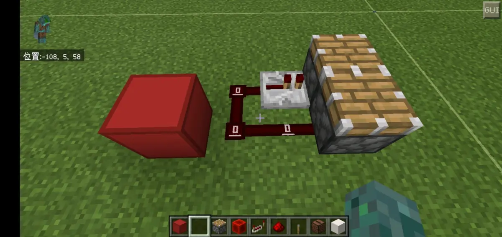
红色羊毛是输入端，接入信号带启动延时俩活塞肉眼观察同时推动，接入信号不带启动延时俩活塞肉眼观察不同时推出
那么为什么上例有启动延时会同时推出?我们拿1，2还有4进行分析：
拿拉杆接入，有启动延时对应1，输出放活塞对应4，放了中继器2条路延时还是一样对应4，中继器自己不响应启动延时，输出也不带启动延时，所以到达活塞的延时1t，正好和红石粉那一路启动延时1t一致。那么用中继器接入我就不讲了，应该都已经理解出来了
这里还有一种检测办法分享，但是这个不讲太多了，自己拿前面的1.2.3.4理解吧（
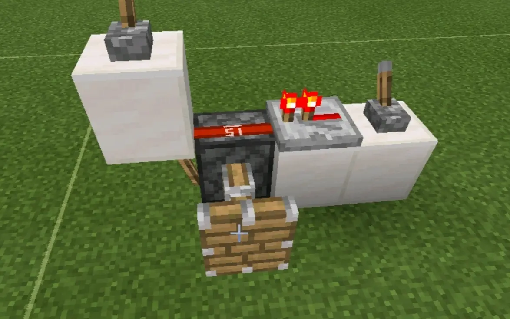
如图所示：拉杆接入断掉信号活塞不会抽搐直到高频火把烧毁活塞收回，中继器接入断掉信号活塞会先抽搐一下然后直到高频火把烧毁活塞收回
那么说了这么多都要对应下文，所以为了全面还要举例出截止目前版本1.16的所有元件哪些会带启动延时和接受启动延时
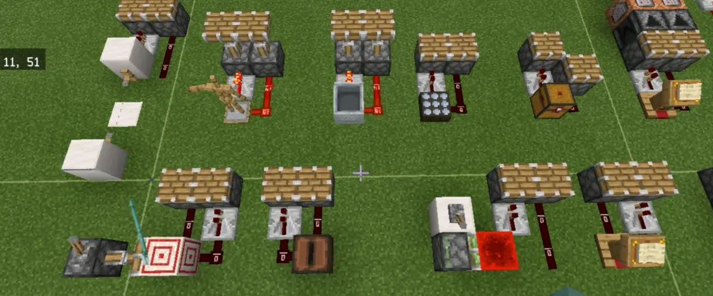
可见绊线钩，压力板，探测铁轨，光感，陷阱箱，标靶，唱片机，活塞推红石块，讲台都是会发出启动延时的信号
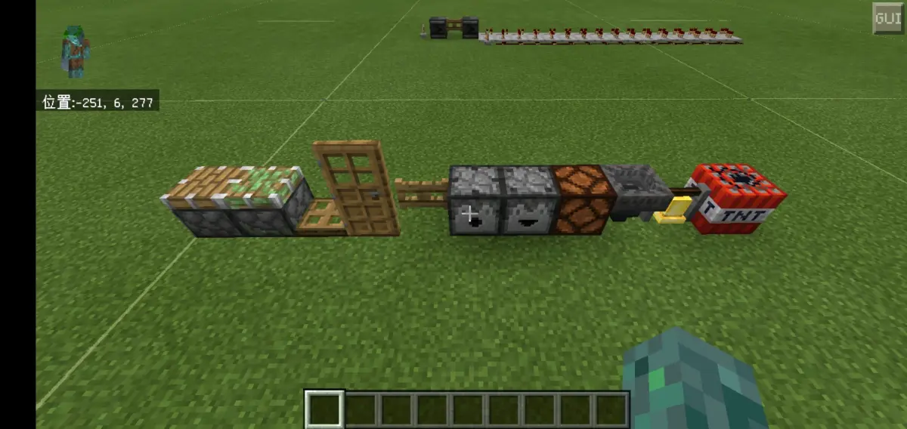
可见普通活塞，粘性活塞，投掷器等都是可以接受启动延时的信号的，我们暂时把这类元件叫做同步类元件。
接下来终于是观察者的正文了先来看看图：
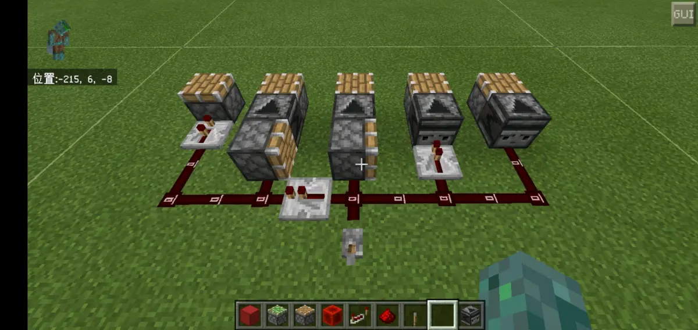
图中5条路的延时一样肉眼观察活塞同时推出，拉杆关掉延时也一样
经过一定的实验证明我们发现，观察者在检测到输出用了足足2t的延时时间（1rt更新检测延时+1rt输出延时）!接下来是2条重要结论：
5.观察者在检测活塞类元件时，因为这类元件是瞬间更新的，所以在实际计算延时的时候不计算活塞类元件的延时
6.在检测红石粉（贴图会慢1t），中继器，比较器，红石火把时实际延时计算要计算元件自身有的延时（大多都是1rt，除了红石灯边沿的特例下文讲）
我们用以上2条结论从左到右计算：
第1路中继器1rt+中继器2rt=3rt
第2路中继器1rt+活塞0rt+察2rt=3rt（活塞开始运动延时不计算）
第3路拉杆接入启动延时1rt+活塞0rt+察2rt=3rt（活塞开始运动延时不计算）
第4路中继器1rt+察2rt=3rt
第5路红石粉贴图变化1rt+察2rt=3rt
与事实契合
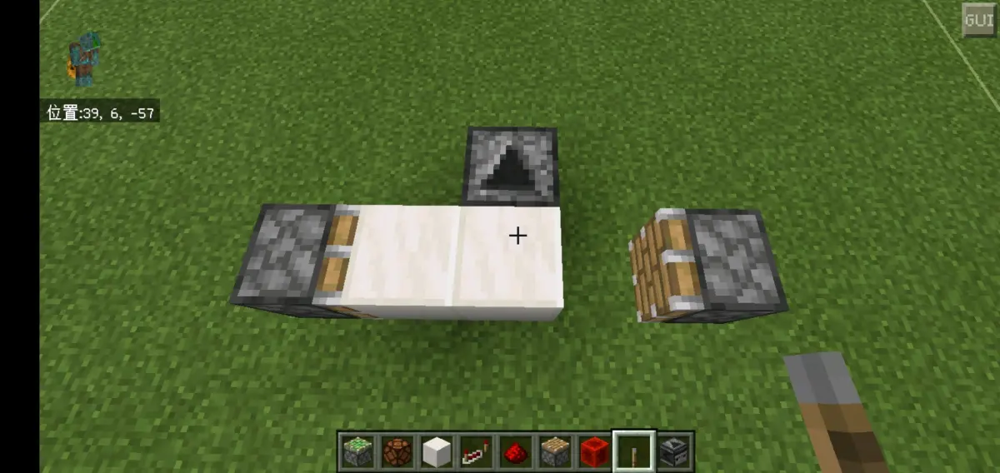
互推，被活塞推动的方块都是同时瞬间更新的。
这是一个很直观的图反映活塞推出后对附近的更新，无论察检测的是瞬间更新的方块还是空气，都和结论5一致。
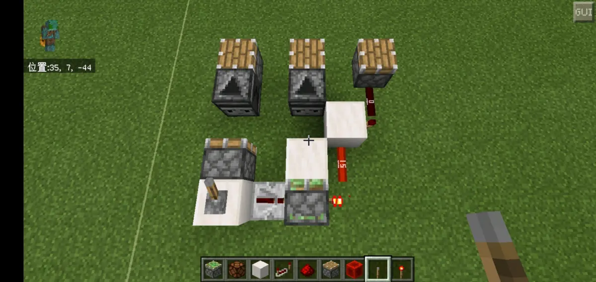
拉杆拉下，3个输出活塞同时推出。
7.观察者在检测活塞臂/活塞推拉方块时，因为活塞对附近是瞬间更新的，所以在实际计算延时的时候不计算活塞运动的延时
我们用结论7从左往右依次计算：
第1路拉杆接入启动延时1rt+活塞推出0rt+察2rt=3rt
第2路中继器1rt+活塞推方块0rt+察2rt=3rt
第3路中继器1rt+红石火把1rt+红石火把1rt=3rt
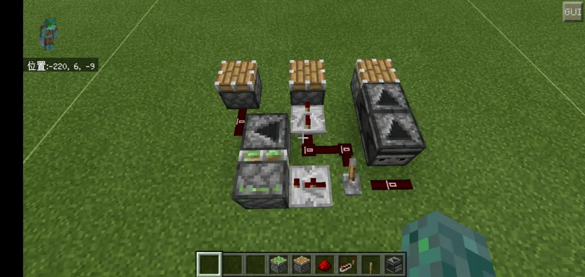
接下来又是2条重要结论：
8.当活塞推动观察者的时候，延时的性质和5有着异曲同工之妙，活塞推察时在实际计算延时的时候不计算活塞的运动延时，察的检测和输出延时还是2rt，这就意味着活塞将察推到位后还有1rt延时后察才开始输出信号，可以理解成活塞运动延时和察的检测延时重叠了
9.察检测到输出分为1rt更新检测延时+1rt输出延时，当出现察检测察的情况，后面的察永远检测的是他前面察的更新检测，可以把它理解成前面察的输出延时和后一个察的检测延时重叠了，不需要计算输出延时。在实际计算延时时，察链直到最后一个信号输出需要计算输出延时1rt
我们用以上2条结论从左往右计算：
第1路中继器2rt+活塞0rt+察2rt=4rt(不计算活塞运动延时)
第2路中继器4rt=4rt
第三路红石粉贴图变化1rt+察检测延时1rt+察检测延时1rt+察输出延时1rt=4rt(第一个察的输出延时不计算)
与事实契合
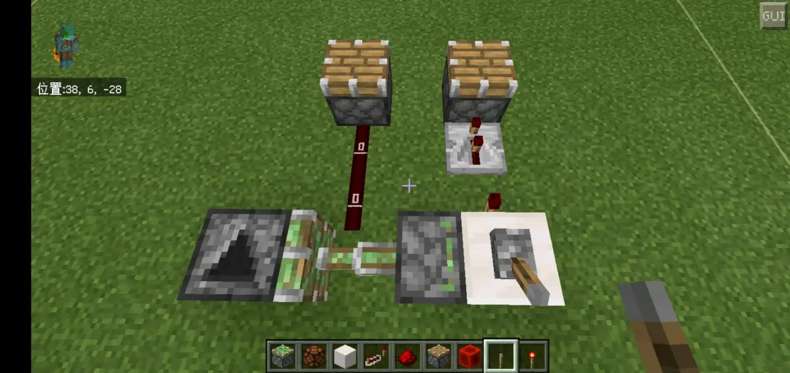
拉杆拉回，2个输出活塞同时推出。
10.当活塞拉回观察者的时候，延时的性质和5有着异曲同工之妙，活塞拉察时在实际计算延时的时候不计算活塞的运动延时，察的检测和输出延时还是2rt，这就意味着活塞将察拉回到位后还有1rt延时后察才开始输出信号，可以理解成活塞运动延时和察的检测延时重叠了
我们用结论10从左往右依次计算：
第1路拉杆接入启动延时1rt+活塞收回0rt+察2rt=3rt
第2路红石火把1rt+中继器2rt=3rt
关于红石灯关闭/下沿更新被察检测的特例：
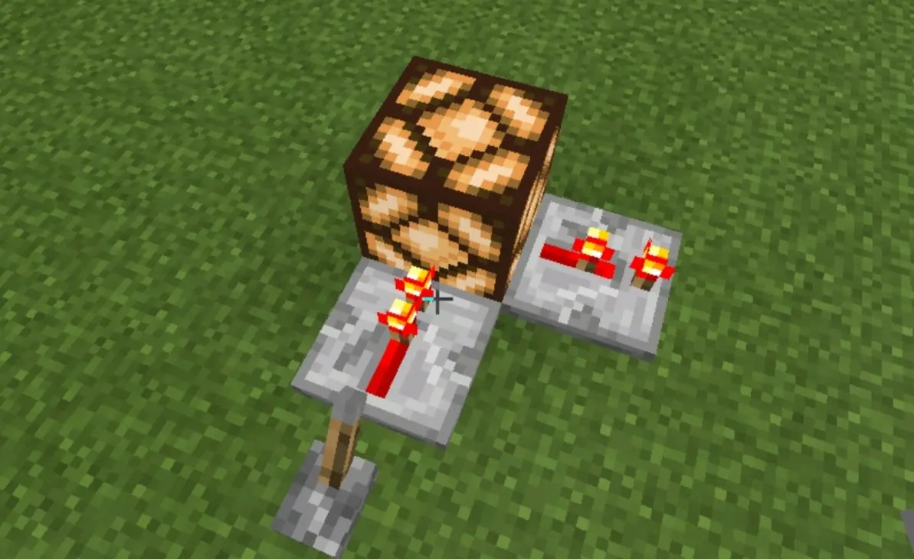
关闭拉杆，红石灯和2档中继器贴图同时熄灭
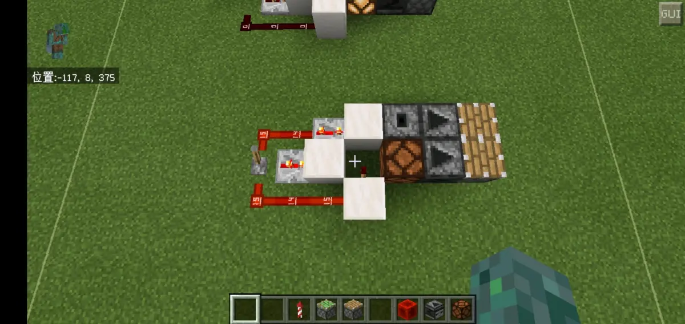
bsi的证明电路，由图中可知：第1路3rt中继器-红石火把1rt=2rt
红石玩家们都应该知道，红石灯在关闭信号后熄灭会直观上慢一点，经过一定的实验证明，红石灯在熄灭/下沿时有足足2rt的延时，这2t的延时纯粹是贴图熄灭比较慢，可以发现，红石灯亮起的延时对应结论5，但是他的熄灭却是一个特例，对应的是结论6，而他2rt后熄灭正是它为什么在下沿被察检测变成检测贴图。可以理解成上沿是同步类元件，下沿的时候察优先检测贴图变化
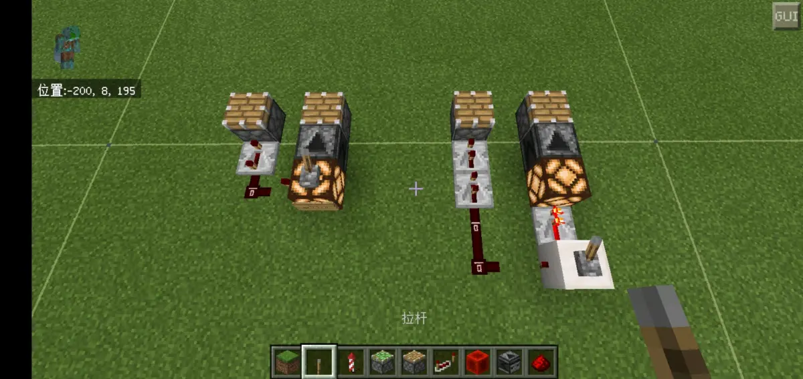
拉杆拉回，两个电路的两个活塞都是同时推出的
来计算下上图左边电路的延时：（从左往右）（拉杆拉回）
第1路红石火把1rt+中继器4rt=5rt
第2路拉杆接入启动延时1rt+红石灯熄灭延时2rt+察2rt=5rt
接下来讲讲察检测一些红石布线上比较生僻缺乏理论的更新：
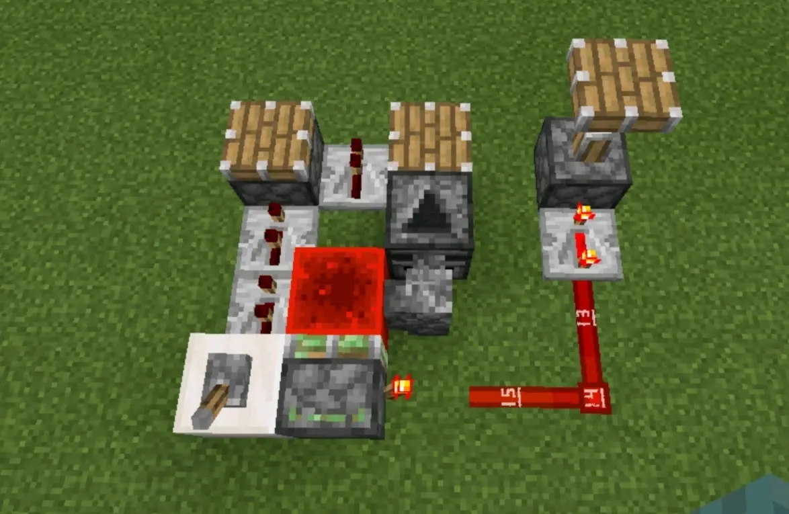
从左往右输出活塞编号1.2.3，拉下拉杆活塞1.2同时伸出，拉回拉杆活塞2.3同时伸出
活塞类元件更新是即时更新，固当活塞激活，对毗邻的石墙的更新是瞬间切断，无需计算活塞运动延时，和结论5一致。而在活塞收回，元件要在他收回位置才能更新，所以活塞收回延时需要计算。
所以在拉杆拉下：
1路2rt+2rt=4rt
2路拉杆接入启动延时1rt+活塞0rt+石墙更新1rt+察2rt=4rt
拉杆拉回：
2路拉杆接入启动延时1rt+活塞1rt+石墙更新1rt+察2rt=5rt
3路红石火把1rt+中继器4rt=5rt
与事实契合
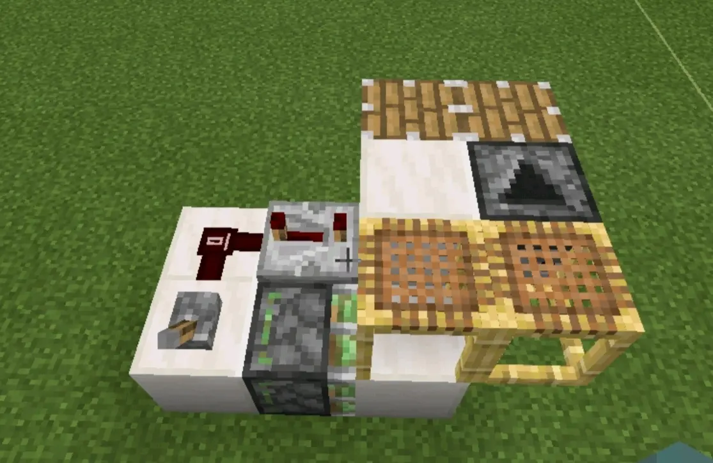
拉下/拉回拉杆，输出同时同时推出
活塞类元件更新是即时更新，固当活塞激活，对脚手架的更新是瞬间切断，无需计算活塞运动延时，和结论5一致。
从左往右计算：
1路中继器4rt=4rt
2路拉杆接入启动延时1rt+活塞0rt+脚手架更新1rt+察2rt=4rt
与事实契合
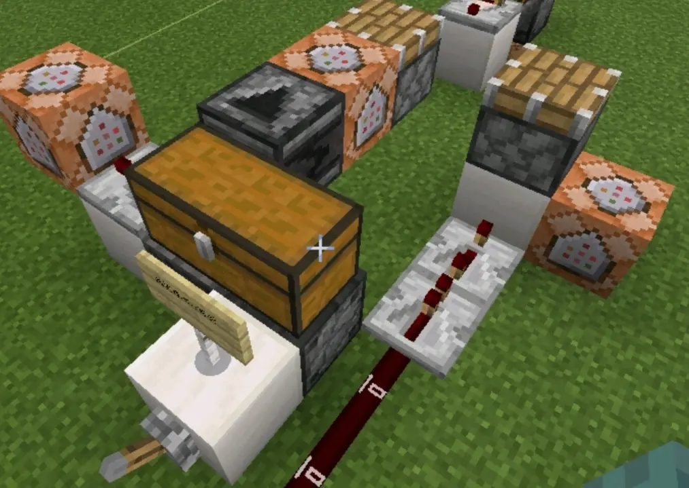
拉下拉杆,2个活塞同时推出
当察检测容器中物品数量变化时，要加上箱子的延时1rt，姑且我们这么认为
从左往右计算：
1路拉杆接入启动延时1rt+投掷器投掷1rt+箱子1rt+察2rt=5rt
2路中继器1rt+中继器4rt=5rt
察的检测冷却时间cd概念请去活塞篇了解。
本文开头强调要把电路搭在区块内，原因是察在区块边界上检测中继器，比较器，红石火把会有延时上的浮动，但是红石粉，同步类元件不会被影响 具体自己研究
察在稳定的区块内检测拉杆，按钮，光感会有延时浮动 但是压力板，绊线钩没有浮动 具体延时浮动的范围数据自己研究
本文就先到这里了。
你能坚持看到这里实属不易，希望鄙人的小理论对你的微帮助让你早日变成奆佬（雾
还不赶紧给我点赞评论转发收藏，lz码了这么久要对得起我2333
有什么问题提议欢迎评论区留言嘿嘿
最后给大家一句凌霄佬的名言（祝大家早日变成奆佬（雾中雾））：
首先，每个械电玩家制作作品，为了把体积压缩到最小，要考虑用该用什么活塞架构、如何布线。不仅如此，还需要对每个方块的特性了如指掌，例如红石灯和投掷器在观察者前的区别，所以，具体到每个位置要放什么方块，都是需要反复推敲、实验的 by:凌霄